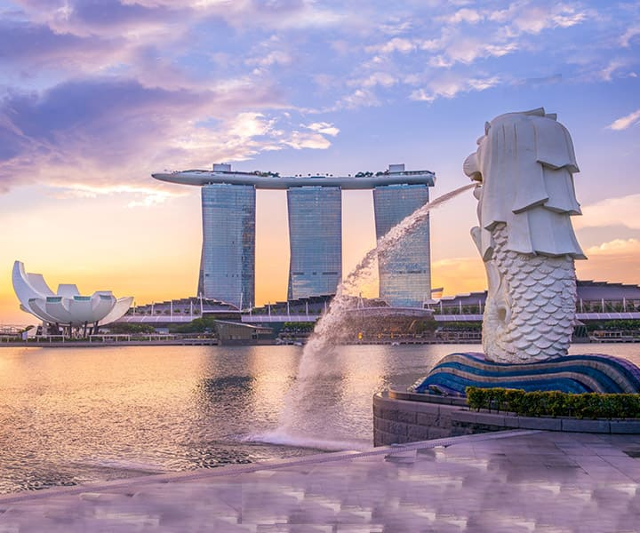
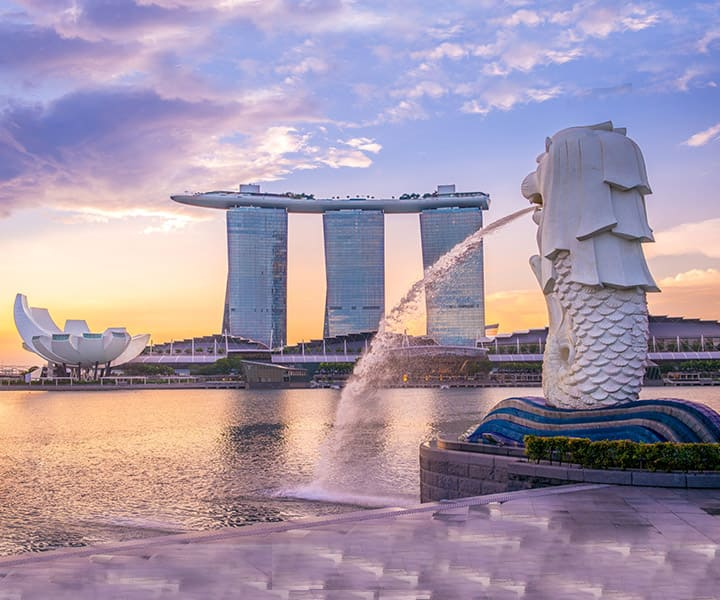

Location:Singapore is a sovereign city-state and island country in Southeast Asia, situated at the southern tip of the Malay Peninsula.
Population:As of my last update, Singapore has a population of approximately 5.7 million people.
Languages:The official languages of Singapore are English, Malay, Mandarin, and Tamil. English is widely used for administration and is the language of instruction in schools.
Culture:Singapore is known for its diverse culture, influenced by Malay, Chinese, Indian, and Western cultures. This diversity is reflected in its cuisine, festivals, and traditions.
Economy:Singapore has a highly developed and successful free-market economy. It is one of the world's leading financial centers and a major hub for trade, shipping, and transportation.
Tourist Attactions:Singapore is a popular tourist destination known for its modern skyline, shopping districts, diverse culinary scene, and vibrant nightlife. Key attractions include Marina Bay Sands, Gardens by the Bay, Sentosa Island, Universal Studios Singapore, and the Singapore Zoo.
Cuisine:Singaporean cuisine is a reflection of the country's multicultural population, blending influences from Chinese, Malay, Indian, and other ethnic groups. Here are some key aspects and dishes of Singaporean cuisine:
Trasportation:The city-state has an efficient public transportation system, including a modern metro (MRT) and bus network, making it easy for residents and tourists to get around.
 
